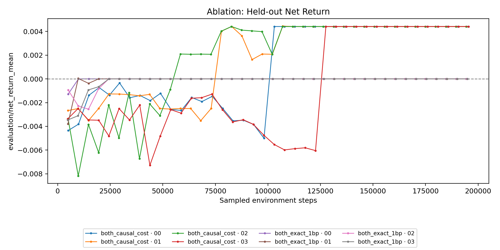
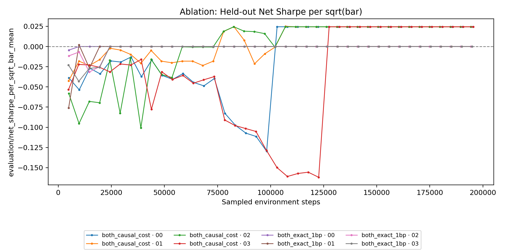
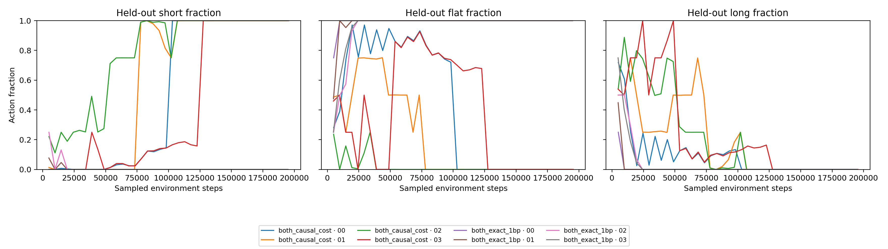
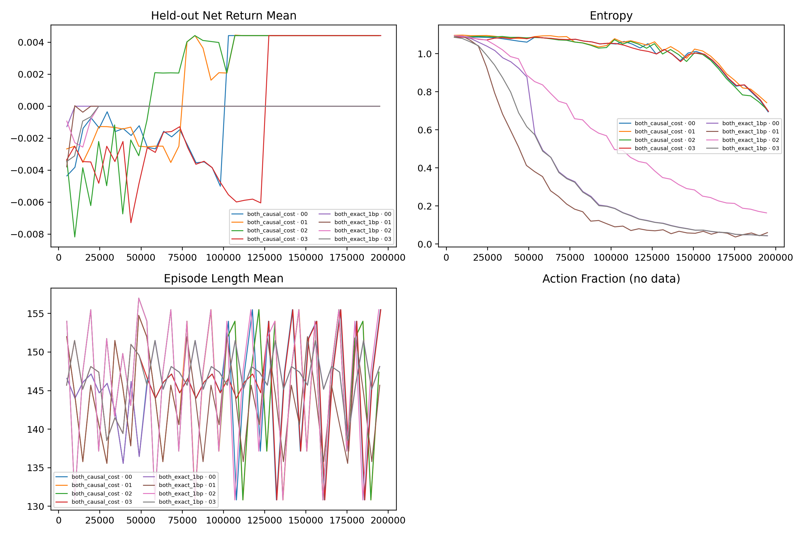

R0 + R4-v1 causal-cost and PBT forensic review
Date: 2026-09-29
Status: completed analysis; mechanics pass, curriculum effect retained, no economic checkpoint promoted
Evidence contract and mechanical validity
The completed pair was ..._065425_both_causal_cost versus ..._074623_both_exact_1bp. Both used dataset-v2 RTH, Family 00, random/generated tasks, stream_worker training, combined R4-v1 state, Ray 2.58 local workers, the same four seeds, the January 2026 crossed 8-anchor x 4-horizon panel, exact 1 bp evaluation, four members and 40 updates.
Across the pair, 320/320 report rows have indexed stable checkpoints. Each arm completed six exploits, 18 exact restore receipts and six verified generation-bound lineages with no stale, missing or pending provenance. The result is not another restore-contamination artifact.
Cost-stage anatomy
Reports are grouped by the cost actually used for the completed update. Evaluation remained exactly 1 bp throughout.
| Training cost | Step span | Positive net + Sharpe | Mean net | Mean Sharpe / √bar | Turnover | Short / flat / long |
|---|---|---|---|---|---|---|
| 0 bp | 4,808–48,896 | 0 / 40 | -0.295182% | -0.033379 | 10.681 | 7.41% / 41.34% / 51.25% |
| 0.25 bp | 53,464–98,144 | 8 / 40 | -0.066297% | -0.037054 | 16.798 | 37.16% / 46.74% / 16.10% |
| 0.5 bp | 102,040–146,944 | 33 / 40 | +0.301633% | +0.000512 | 9.075 | 88.39% / 8.49% / 3.12% |
| 1 bp | 150,600–195,560 | 40 / 40 | +0.441611% | +0.024455 | 2.000 | 100% / 0% / 0% |
The rise is real as optimizer guidance and activity preservation, but it is almost entirely convergence to the fixed panel's aggregate short direction. All members were effectively short-only before the final 1 bp stage, so that last transition did not cause the collapse.








PBT event anatomy
| Boundary | Target ← donor | Before | After / meaning |
|---|---|---|---|
| 48.8k | 00003 ← 00000 | both weak | target remained negative/mostly flat |
| 72.9k | 00001 ← 00002 | 50% flat / 50% long, -0.2498% | 98.97% short, +0.4021%, 0.01865 Sharpe |
| 98.1k | 00000 ← 00002 | 72% flat, -0.5002% | exact short-only +0.4416% / 0.02445 |
| 122.7k | 00003 ← 00002 | -0.6045% / -0.1619 | exact short-only |
| 151.6k / 175.8k | tied short lineages | same economic policy | mutation without new economic information |
Member 00002 reached the basin without a restore; PBT then propagated it. Search was active and mechanically sound. Once every member ties, however, quantile tie-breaking continues to generate exploit events without information. Future summaries should label that search exhaustion and stop all-equal/all-ineligible populations.
The fixed recipe carried to initial R1 attribution should be the unexploited member-00002 line: learning rate about 7.1517e-6, entropy schedule [[0,.005],[96k,.002],[240k,.0005]], gamma .99, lambda .90, clip .1, minibatch 128, 20 SGD passes, value clip 20 and value-loss coefficient 2.0.
Exact-cost basin and reporting correction
Exact 1 bp from update zero drove members to pure flat at 9,880 / 19,472 / 24,280 / 24,344 steps, before the first exploit. Every later report was zero/flat. This is an objective basin, not failed PBT.
A reporting-only defect was found: static-cost runs omitted training/optimization_cost_bps, and aggregate CSV output displayed the missing field as zero. The resolved exact-arm training and evaluation task configs both prove cost_bps=1.0, and behavior/replay agree. A red/green patch now resolves the field from either a schedule or static task configuration. Completed reward delivery and economics are unchanged.
Checkpoint and logit forensics
No checkpoint is promotable. Seventy-three positive reports were exactly short-only; the other eight were at least 98.014% short. The sole row marginally above short-only, member 00001 at 107,056 steps, was 99.943% short and failed exact replay by 7.4030326e-06.
Member 00002 at 77,832 steps repeated the same one-action replay delta. Its 4,672-step diagnostic explains the instability:
| Diagnostic | Value |
|---|---|
| fresh greedy short fraction | 99.358% |
| mean probabilities short / flat / long | 40.18% / 27.30% / 32.52% |
| mean entropy | 1.08234, versus ln(3)=1.09861 |
| top-two logit margin p1 / p5 / median | 0.00592 / 0.02057 / 0.19693 |
| steps with margin < 0.01 | 1.755% |
| masked-state counterfactual argmax changes | 2.440% |
The deterministic evaluator is nearly all-short while the stochastic policy remains broad. A small set of tiny argmax margins can change actions across processes, so one-action aggregate uplifts are not robust edge.
Evidence: 77,832 replay and state/logit diagnostic.
Panel direction and regime interpretation
The held-out panel is fixed across updates. The evaluation regime did not change as the training curve moved. Training-block symbol/regime identity is not persisted per report, so claims that a particular training regime caused a jump are currently unscoreable.
| Anchor | Mean short-only net | Positive horizons |
|---|---|---|
| AMZN | +0.6744% | 4/4 |
| AMD | +0.4319% | 4/4 |
| AVGO | +2.1405% | 4/4 |
| NVDA | +1.1124% | 4/4 |
| IWM | -0.3884% | 0/4 |
| MSFT | -0.4514% | 0/4 |
| QQQ | +0.0396% | 2/4 |
| SPY | -0.0261% | 1/4 |
Short-only wins 19/32 episodes and loses 13/32. A hindsight per-episode constant-direction oracle averages +0.66035%, compared with short-only +0.44161%. That is not a causal target; it quantifies unused conditional-direction room.
PPO and critic
There is no PPO blow-up: approximate KL is small. Causal entropy stayed high while greedy evaluation collapsed. Mean explained variance rose only from 0.0065 to 0.0376, still weak critic fit. Exact-arm value loss mostly learns the trivial flat zero target. clip_fraction is NaN in all 320 reports and absent from captured learner keys; repair that observability before interpreting R1 update pressure.
Normalized historical direction of travel
Raw cross-run return is not one valid curve because datasets, panels, runtime, budgets, and evidence contracts changed. Use matched-control margins and keep architecture deltas separate.
| Evidence cell | Net-control margin | Sharpe-control margin | Qualification |
|---|---|---|---|
| v1 discovery 00001 | +0.16980 pp | +0.01040 | shared lineage; independent replications failed |
| v1 discovery 00003 | +0.18610 pp | +0.00993 | descendant of 00001 |
| v1 raw-24k transient | +0.22392 pp | +0.01391 | transient; block interval crosses zero |
| v2 Gate D transient | +0.02146 pp | +0.00819 | regressed |
| v2 crossed staged R0 | 0 pp | -0.02385 | short-only |
| December R0 + R4-v1 mean | -0.2111 pp | -0.0573 | +0.0885 pp paired uplift versus masked |
| January causal terminal | 0 pp | 0 | exact short-only tie |
The monotone improvement is evidence quality—arithmetic returns, deterministic panels, exact replay, target-owned PBT clocks, lineage receipts, dataset-v2, crossed panels, block uncertainty, and explicit control state—not absolute alpha. The interactive dashboard presents cost-stage net return, Sharpe, turnover, action fractions, PPO/critic diagnostics, and the control-relative historical view without a misleading raw connected line. Labels that name December 2025 or January 2026 refer to market evaluation panels, not experiment run dates; the R4-v1 experiments ran in September 2026.
G0 fresh-panel closure
Five member-00002 checkpoints were evaluated on the predeclared, non-overlapping November-2025 panel. Every fresh-panel net return and Sharpe was negative; the least-negative 102,040-step checkpoint scored -0.22822% net and -0.00620 Sharpe, while later checkpoints collapsed to pure short. R0 + R4-v1 therefore remains architecture-qualified but economically unpromoted.
The paired episode and state-step artifacts are byte-identical, and their receipt metrics and panel hashes agree with the closure summary. The historical receipts do not contain distinct producer/run identifiers, however, so the canonical experiment browser reports artifact-pair parity and leaves independent-process provenance unknown. Future R1 replay receipts must stamp producer identity at creation time before an independently verified process-replication claim.
Next boundary
- Run no more PPO on the January panel.
- Freeze the lower-LR recipe across matched Ray-2.58 R0, clean R1 and R1 + R4-v1.
- Carry causal staging as an explicitly named matched factor.
- Stamp producer identity in future replay receipts and retain per-anchor actions, controls, margins and artifact hashes.
- Run PBT only after representation attribution.
If a final feed-forward probe is ever mandated, it must be edge-gated no-cost discovery: cost cannot rise until a checkpoint beats the strongest directional control on net and Sharpe for three consecutive exact-replay reports. No gate by 384k is a hard stop. This new conditional-schedule seam is lower priority than R1.
Validation and scope
- Exact progress-checkpoint selection added to replay; focused replay tests pass.
- 77,832-step replay and 4,672-step state diagnostics completed.
- Static optimization-cost reporting fixed red/green; six focused schedule/static tests pass.
- No training run, final-test access, commit, push, staging operation, deletion, R4-v2 change or R1 implementation occurred.
Full Markdown source: solver-state-r4-v1-causal-forensics-2026-09-29.md. Upstream audit: R0 + R4-v1 actor-robustness audit.